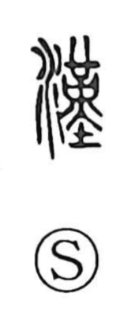

漢

Uncategorized
Kun: otoko | On: kan
han (chinese) ・ china ・ man ・ fellow
Explanation
漢 is a phono-semantic character in which a phonetic element signals the on-yomi kan. It originally named the Han River (Hanshui), flowing southeast from present-day Shaanxi, and by extension the river valley itself. Liu Bang, the “King of Han” in that region, chose this name for the dynasty he founded in 202 BCE after the Qin; thereafter 漢 came to stand for China. From the fourth–fifth centuries, the term 漢子 hànzi, “Han fellow,” was used for a male, which underlies the Japanese use of 漢 for otoko, ‘man.’